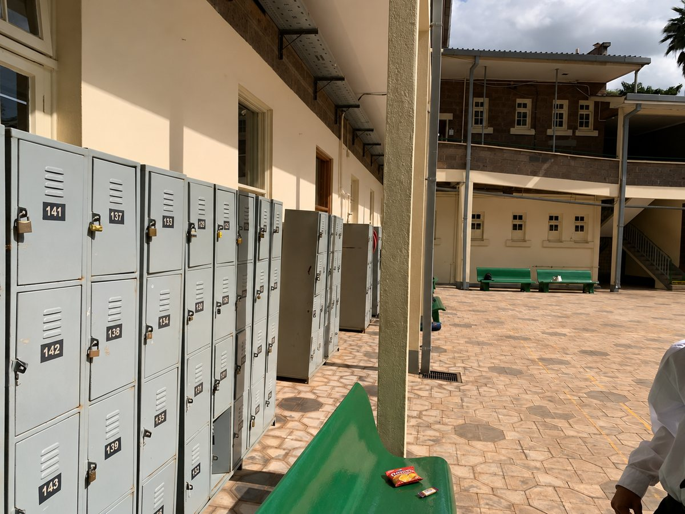
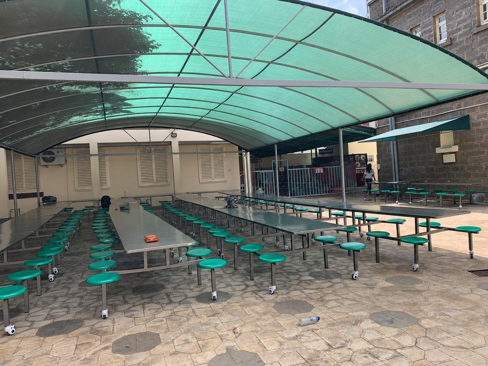

Causes
Much plastic waste comes from items that are used once and then thrown away, such as the snacks and drinks students buy at school.
- Single-use plastic bottles
- Food wrappers
- Plastic packaging
- Incorrect waste disposal
Plastic pollution occurs when plastic waste builds up in the environment. Items such as bottles, bags and food packaging can remain for many years and may harm wildlife and ecosystems.

Much plastic waste comes from items that are used once and then thrown away, such as the snacks and drinks students buy at school.
Plastic does not rot away like food or paper, so it can cause problems long after it is dropped.
The most effective solution is to create less plastic waste in the first place.
Small habits repeated every day prevent a large amount of plastic waste over a school year.
Break and lunch are the times when the most packaging is opened at school. Crisp packets, sweet wrappers and drink bottles are light, so if they are left on a table or dropped on the floor they can easily be blown into gardens and drains.
Because eating areas are shared by many students, it only takes a few people leaving packaging behind for the space to look untidy. Taking your wrapper to the bin takes a few seconds and keeps the area clean for the next group.
